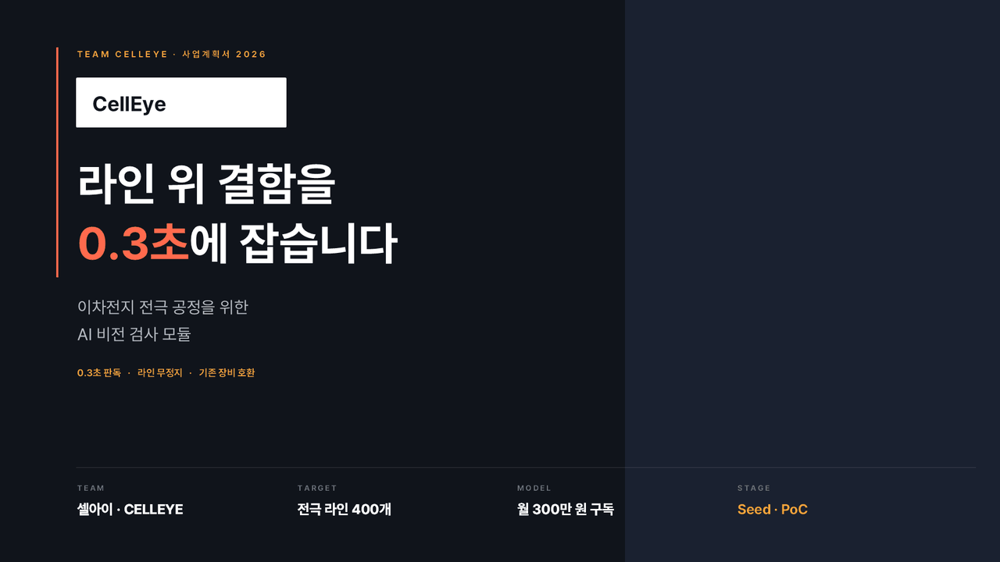
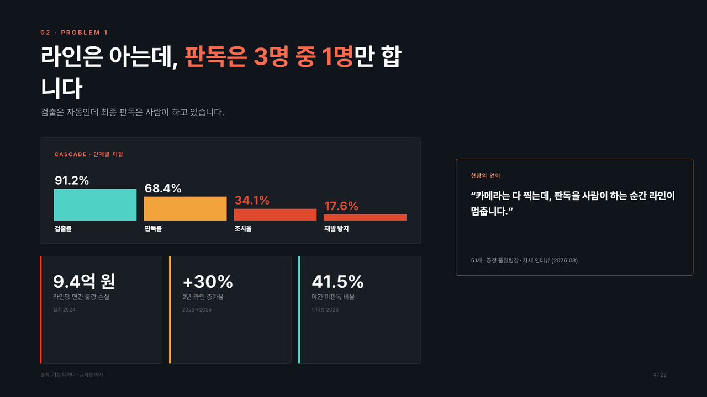
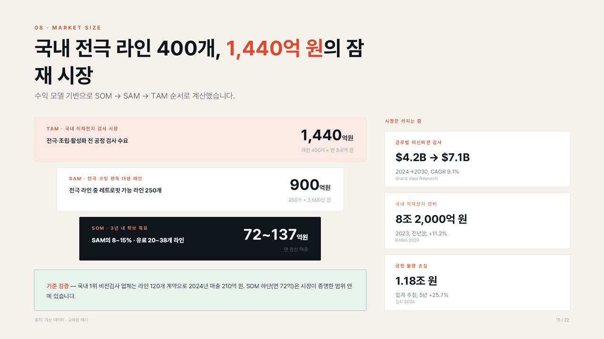

1. 무엇이 나오나요?
실행이 끝나면 출력 폴더 안 10_final/에 네 가지가 만들어집니다. 네 가지 모두 여러분 컴퓨터에만 저장됩니다.
① 발표용 PPTX
{팀명}_Seed_IR_Deck.pptx — 본문 12~14장 + 예상 질문 부록. 파워포인트에서 그대로 열어 글자·이미지를 직접 고칠 수 있습니다.
② 배포용 PDF
심사위원에게 메일로 보내거나 인쇄할 때 쓰는 파일입니다. PowerPoint 또는 LibreOffice가 설치돼 있으면 자동으로 함께 만들어집니다.
③ 피칭가이드.md
5분 발표 대본(장별 초 단위 배분), 예상 질문과 답변, 제출 전 확보 필요 목록, 라이선스 확인이 필요한 이미지 표가 들어 있습니다.
④ 검수용 PNG
10_final/qa_png/에 장표를 그림으로 저장합니다. 파워포인트를 열지 않고도 글자 넘침·여백을 눈으로 바로 확인할 수 있습니다.
예시 슬라이드 — 교육용 가상 팀 「셀아이」
아래 세 장은 교육용 가상 팀 자료로 만든 예시입니다. 실제 회사가 아니며 숫자도 모두 예시입니다.



작업 과정 파일(추출된 텍스트, 사실 팩, 모의심사 결과, 근거 원장)도 같은 출력 폴더에 번호 순서대로 남습니다. 어떤 숫자가 어디서 왔는지 나중에 되짚어 볼 수 있습니다.
2. 준비물 — 처음 한 번만
아래 다섯 가지를 한 번만 준비하면 그다음부터는 실행만 하면 됩니다.
| 항목 | 필수 | 왜 필요한가요 | 어디서 받나요 |
|---|---|---|---|
| Claude Code (Windows·Mac) | 필수 | 플러그인을 실행하는 프로그램입니다. | claude.com/claude-code |
| Python 3.10 이상 | 필수 | hwp·PDF에서 글자와 사진을 뽑고 PPTX를 만듭니다. | python.org (설치할 때 Add Python to PATH 체크) |
| Chrome 또는 Edge | 필수 | 근거 기사·통계 페이지를 화면 그대로 캡처합니다. | 이미 설치돼 있다면 그대로 쓰면 됩니다. |
| Pretendard 폰트 | 필수 | 덱 디자인이 설계된 그대로 렌더링됩니다. 없으면 시스템 고딕으로 대체되고 경고가 뜹니다. | github.com/orioncactus/pretendard → Releases에서 내려받아 설치 |
| PowerPoint 또는 LibreOffice | 선택 | PDF와 검수용 PNG를 자동으로 만듭니다. 없으면 PPTX만 나오고 가이드에 저장 방법을 안내합니다. | 보유한 쪽을 쓰면 됩니다. LibreOffice는 무료입니다. |
Windows — Python 패키지 설치
py -m pip install python-pptx pymupdf pillow olefile python-docx openpyxl jsonschemaMac — Python 패키지 설치
python3 -m pip install python-pptx pymupdf pillow olefile python-docx openpyxl jsonschema설치가 끝났는지 확인하려면 아래 한 줄을 실행해 보세요. 아무 메시지 없이 끝나면 정상입니다.
python -c "import pptx, fitz, PIL, olefile, docx, openpyxl, jsonschema"Node나 npm은 필요 없습니다. 유료 API 키도 따로 필요하지 않습니다.
3. 설치 — 두 줄이면 끝
Claude Code를 켜고 아래 두 줄을 차례로 입력하세요.
/plugin marketplace add aqualife75/jsbiz-seed-ir
/plugin install seed-ir@jsbiz-seed-ir설치가 끝나면 Claude Code를 새 세션으로 다시 시작하세요. 새 세션에서 /seed-ir를 입력했을 때 자동완성 목록에 뜨면 성공입니다.
업데이트
기능이 추가되면 아래 한 줄로 최신본을 받습니다.
/plugin marketplace update jsbiz-seed-ir4. 자료 폴더 만드는 법
폴더 하나를 만들고 팀 자료를 전부 넣으면 됩니다. 폴더 안에서 다시 하위 폴더로 나눠도 괜찮습니다.
| 넣으면 좋은 자료 | 확장자 | 덱의 어디에 쓰이나요 |
|---|---|---|
| 참가신청서 · 지원서 | hwp · hwpx · pdf | 팀 정보, 문제 정의, 아이템 개요의 뼈대가 됩니다. |
| 사업계획서 | hwp · hwpx · pdf · docx | 시장 규모, 수익 모델, 마일스톤, 자금 계획의 근거입니다. |
| 기존 발표자료 | pptx · pdf | 이미 만든 도식·차트를 재활용합니다. |
| 제품·서비스 사진, 화면 캡처 | png · jpg | 표지와 해결방안 장표의 제품 이미지로 씁니다. |
| 고객 인터뷰 정리, 설문 결과 | docx · xlsx · pdf | 문제의 심각성과 고객 반응(성과 지표)의 증거가 됩니다. |
| 매출·가입자 등 실적 자료 | xlsx · pdf | 성과 지표는 팀 실적만 씁니다. 외부 자료로 대체하지 않습니다. |
폴더 예시
우리팀_자료/
├─ 셀아이_참가신청서.hwp
├─ 셀아이_사업계획서.pdf
├─ 고객인터뷰_12명_정리.docx
├─ 설문결과_2026상반기.xlsx
└─ 사진/
├─ 제품_모듈.png
└─ 현장_라인.jpg세 가지만 지켜 주세요
파일명에 팀명
파일 이름 앞에 팀명을 붙이면 팀명을 자동으로 인식합니다. 인식이 안 되면 실행할 때 --team 셀아이로 직접 알려 주면 됩니다.
없는 자료는 없는 대로
모든 자료를 다 갖출 필요는 없습니다. 부족한 부분은 하네스가 확보 필요 목록으로 정리해 줍니다. 빈칸을 상상으로 채우지 않습니다.
암호가 걸린 파일은 빼기
열 때 비밀번호를 묻는 파일은 읽지 못합니다. 비밀번호를 푼 사본을 넣거나 폴더에서 빼 주세요.
5. 실행 — 한 문장
Claude Code에서 자료 폴더 경로를 넣어 한 줄만 입력하면 됩니다.
/seed-ir "C:\Users\나\Desktop\우리팀_자료""이 폴더 자료로 Seed IR덱 만들어줘"처럼 말로 부탁해도 됩니다. Mac에서는 경로가 /Users/나/Desktop/우리팀_자료 형태입니다.
자주 쓰는 옵션
| 옵션 | 언제 쓰나요 |
|---|---|
--team 셀아이 | 팀명이 자동으로 인식되지 않을 때 직접 지정합니다. |
--out "D:\결과" | 결과 폴더를 자료 폴더 옆이 아닌 다른 곳에 만들고 싶을 때 씁니다. |
--accent #1B3A5C | 덱의 강조색을 팀 브랜드 색으로 바꿉니다. |
--resume | 중간에 멈췄을 때 끝난 단계를 건너뛰고 이어서 진행합니다. |
--from 4 | 4단계(근거 조사)부터 다시 실행합니다. 자료를 보강한 뒤에 씁니다. |
--yes | 중간 확인 두 번을 건너뛰고 끝까지 자동으로 진행합니다. |
진행 중 두 번 물어봅니다
① 스토리라인 확인
12~14장의 장별 주제·투자자 질문·핵심 메시지를 표로 보여 줍니다. 순서를 바꾸거나 장을 빼고 싶으면 그 자리에서 말로 고치면 됩니다. 예: "팀 역량을 시장 규모 앞으로 옮겨 주세요."
② 남은 critical 승인
인터넷 조사로도 채우지 못한 치명적 빈칸이 남으면 목록을 보여 주고 묻습니다. "계속"을 고르면 그 자리는 [확보 필요]로 남긴 채 덱을 만들고, "중단"을 고르면 확보 목록만 정리하고 멈춥니다.
6단계, 40~60분
| 단계 | 담당 | 하는 일 | 남기는 것 |
|---|---|---|---|
| 1. 자료 판독 | ir-intake | hwp·PDF·사진에서 글자와 이미지를 뽑아 사실 팩 10항목으로 정리합니다. | 02_fact_pack.json |
| 2. 본문 작성 | ir-writer | 스토리라인을 짜고 장마다 거버닝 메시지(제목 한 문장)와 본문을 씁니다. | 04_slides_v1.json |
| 3. 검산 · 모의심사 | ir-panel | 숫자를 검산하고 VC·액셀러레이터·도메인 전문가·재무·비전문가 5인 시각으로 채점합니다. | 05_review/ |
| 4. 근거 조사 | ir-researcher | 약한 주제만 골라 통계·기사·논문을 찾아 캡처하고 본문을 개정합니다. | 06_evidence/ · 07_slides_v2.json |
| 5. 디자인 | ir-designer | 장표별 레이아웃을 배치해 PPTX를 만들고 PNG로 검수합니다. | 09_build/ |
| 6. 피칭 대본 | ir-finalizer | 5분 대본과 예상 질문, 확보 필요 목록을 정리해 최종본을 냅니다. | 10_final/ |
중간에 창을 닫아도 진행 상황은 state.json에 남습니다. 같은 명령에 --resume만 붙이면 이어서 진행합니다.
6. 결과 확인 — 이 3가지만
파일이 많아 보여도 사람이 직접 볼 것은 세 가지뿐입니다.
① 10_final/qa_png/ — 장표 그림
장표를 한 장씩 그림으로 저장해 둔 폴더입니다. 훑어보면서 글자가 상자를 넘쳤는지, 제목이 두 줄로 깨졌는지, 사진이 눌렸는지만 보면 됩니다. 이상한 장이 있으면 그 장 번호를 말해 주면 고쳐 줍니다.
② 피칭가이드.md의 "제출 전 확보 필요 목록"
자료에도 없고 조사로도 못 채운 숫자·근거가 표로 정리돼 있습니다. 여기 적힌 항목은 여러분이 직접 채워야 합니다. 채운 뒤 자료 폴더에 파일을 추가하고 --from 4로 다시 실행하면 덱에 반영됩니다.
③ 같은 파일의 "라이선스 확인 필요 이미지" 표
인터넷에서 가져온 이미지는 출처와 라이선스 상태가 함께 적힙니다. 확인이 안 된 이미지는 제출 전에 반드시 빼거나 직접 찍은 사진으로 바꾸세요. 대회 제출물에서 저작권 문제는 팀이 책임집니다.
숫자가 어디서 왔는지 궁금하면 05_review/trace_report.json을 여세요. 덱의 모든 숫자가 어느 파일 몇 쪽, 또는 어느 출처에서 왔는지 적혀 있습니다.
7. 수정 요청은 대화로
파워포인트를 직접 열어 고쳐도 되지만, 그냥 말로 부탁하는 편이 빠릅니다. 아래처럼 어느 장의 무엇이 어떻게 보이는지만 말하면 됩니다.
| 이런 상황이면 | 이렇게 말합니다 |
|---|---|
| 숫자가 안 보인다 | "6장 시장 규모에서 SOM 숫자가 본문에 묻혔습니다. 핵심 숫자 하나를 크게 키우고 단위는 작게 붙여 주세요." |
| 강조색이 많다 | "3장에 강조색이 네 군데입니다. 가장 중요한 한 곳만 남기고 나머지는 검정으로 바꿔 주세요." |
| 표가 출처와 겹친다 | "7장 경쟁사 비교표 아래쪽이 출처 문구와 붙었습니다. 표 높이를 줄이고 출처와 16px 이상 띄워 주세요." |
| 제목이 길다 | "2장 제목이 두 줄로 넘어갑니다. 뜻은 그대로 두고 한 줄에 들어가게 45자 이내로 줄여 주세요." |
| 카드가 넘친다 | "5장 카드 세 개 중 가운데 글자가 상자 밖으로 나갔습니다. 문장을 짧게 줄이거나 카드를 두 개로 합쳐 주세요." |
| 여백이 어색하다 | "9장 마일스톤 그래프가 오른쪽으로 치우쳤습니다. 좌우 여백을 같게 맞추고 아래 여백을 조금 더 주세요." |
| 단어 중간 줄바꿈 | "4장 본문에서 '고객만족도'가 '고객만'과 '족도'로 잘렸습니다. 단어 중간에서 줄이 바뀌지 않게 해 주세요." |
| 숫자 대조표 | "덱에 나온 모든 숫자를 장 번호·숫자·출처 순서의 표로 만들어 주세요. 원본 자료와 하나씩 대조하겠습니다." |
확보 필요 목록을 채운 뒤
부족했던 자료(실적 표, 인터뷰 기록, 견적서 등)를 구했다면 자료 폴더에 파일만 추가하고 아래 명령으로 4단계부터 다시 돌리세요. 이미 확정된 앞 단계는 그대로 두고 근거 조사·디자인·대본만 다시 만듭니다.
/seed-ir "C:\Users\나\Desktop\우리팀_자료" --from 4디자인만 다시 하고 싶으면 --from 5, 대본만 다시 뽑고 싶으면 --from 6을 쓰면 됩니다.
8. 원리 — 정석Biz 노하우 12 주제와 투자자의 질문
이 플러그인은 정석Biz 노하우 「IR Deck 작성」의 12개 주제를 그대로 따릅니다. 각 장의 제목은 그 주제에 대한 투자자의 질문에 답하는 한 문장이어야 합니다. 제목만 읽어도 내용을 알 수 있어야 한다는 뜻입니다.
| 주제 | 투자자의 질문 |
|---|---|
| 1. 표지 | 창업팀이 발견한 문제와 해결책이 이거였어? 정말 좋은 아이템인지 궁금하네 |
| 2. 문제 배경 & 문제 정의 | 창업팀이 제시한 트렌드에 무슨 기회가 있는 거지? 고객이 겪는 문제가 정말 해결할 필요가 있는 중요한 문제인가? 기존 대체재·경쟁사는 무엇이고, 그들이 아직 해결하지 못한 문제는 무엇인가? |
| 3. 해결방안 및 제품 소개 | 고객의 문제를 대체재·경쟁사보다 어떻게 더 혁신적으로 해결해 주는 거지? |
| 4. 성과 지표 | 창업팀이 제시한 해결방안에 대해서 고객들 반응이 어때? |
| 5. 비즈니스 모델(수익 모델) | 오! 고객 반응이 좋다면 돈은 어떻게 벌지? |
| 6. 시장 규모 | 당장 공략할 수 있는 시장이랑 전체 먹을 수 있는 시장 규모는? |
| 7. 경쟁사 차별점 | 이렇게 매력적인 시장에 경쟁사도 있을 텐데 차별화는? |
| 8. 시장 진입 & 성장 전략 | 지금의 창업팀은 듣보잡인데 시장에 어떻게 진입하지? |
| 9. 마일스톤 | 최소 5년 동안 어떻게 성장할 거야? |
| 10. 팀 역량 | 지금까지 제시한 사업계획을 정말 잘 실현할 수 있는 팀인가? |
| 11. 비전 | 이 팀은 결국 어디까지 가려는 거지? |
| 12. 자금 조달 계획 & 사용 방안(The Ask) | 얼마를 어디에 쓰고, 그 돈으로 다음엔 무엇을 보여줄 건데? |
슬라이드 해부학 — 한 장에 들어가는 네 가지
① Navigator
이 장표가 12주제 중 어느 주제인지 왼쪽 위에 작게 표시합니다. 투자자가 지금 무슨 이야기를 듣고 있는지 놓치지 않게 해 줍니다.
② Governing Message
장표의 제목입니다. 발표를 놓쳐도 이 한 문장만 읽으면 내용을 알 수 있어야 합니다. "시장 규모"가 아니라 "3년 내 확보 가능한 SOM은 420억 원입니다"처럼 씁니다.
③ 세부 설명 & 증거 이미지
주장을 뒷받침하는 통계·기사·인터뷰·차트·현장 사진을 배치하고 출처를 함께 적습니다. 장표 내용과 직접 연결되지 않는 장식용 이미지는 쓰지 않습니다.
④ 페이지 번호
Q&A에서 "6쪽 다시 보여 주세요"라는 요청에 바로 대응하기 위해 모든 장에 번호를 넣습니다.
없는 숫자는 만들지 않는다 → trace
이 하네스의 가장 중요한 원칙입니다. 덱에 등장하는 모든 숫자는 사실 팩(팀이 준 자료) 또는 증거 원장(조사로 찾은 공식 출처) 중 한 곳에 실제로 존재해야 합니다. trace 검사가 덱의 숫자 토큰을 하나씩 원본 값과 대조해서, 어디에도 근거가 없는 숫자가 한 건이라도 있으면 그 단계를 통과시키지 않습니다. 그래서 매출 추정치나 시장 규모를 그럴듯하게 지어내는 일이 구조적으로 막혀 있고, 자료에 없는 자리는 빈칸 대신 [확보 필요] 표시로 남아 피칭가이드의 확보 필요 목록에 모입니다. 발표 전에 그 목록을 채우는 것이 팀의 몫이고, 그 과정 자체가 투자자 질문에 대한 준비가 됩니다.
9. 자주 묻는 질문
hwp 파일을 못 읽는다고 나옵니다
구형 hwp 중 일부(암호 설정·배포용 문서)는 글자 추출이 안 됩니다. 한글에서 해당 파일을 열고 다른 이름으로 저장 → PDF로 저장해 같은 폴더에 넣은 뒤 --resume으로 다시 실행하세요. hwpx로 저장해도 됩니다.
PowerPoint가 없어도 되나요?
됩니다. PPTX 파일은 그대로 만들어집니다. 다만 PDF와 검수용 PNG는 자동으로 만들어지지 않으니, 무료 LibreOffice를 설치하거나 만들어진 PPTX를 PowerPoint·Keynote·구글 슬라이드에서 열어 PDF로 저장하세요. 피칭가이드에 이 안내가 함께 들어갑니다.
글꼴이 깨져 보입니다
Pretendard 폰트가 설치되지 않은 경우입니다. Pretendard Releases에서 내려받아 설치한 뒤 PPTX를 다시 열어 보세요. 자간과 줄바꿈까지 설계대로 맞춰집니다.
시간과 비용이 얼마나 드나요?
자료 양에 따라 40~60분 정도 걸립니다. 플러그인 자체는 무료이고 별도 API 결제도 없습니다. Claude Code 사용량만 소모됩니다.
우리 팀 자료가 외부로 나가지 않나요?
추출된 글자, 사진, 사실 팩, 덱 파일은 모두 여러분 컴퓨터의 출력 폴더에만 저장됩니다. 저장소나 다른 서버로 업로드하지 않습니다. 4단계 근거 조사에서 공개된 통계·기사 페이지를 방문해 캡처할 때만 인터넷을 씁니다. 이때도 팀 자료 내용을 검색어로 그대로 보내지 않도록 조사 주제만 다룹니다.
영문 덱도 만들 수 있나요?
이 플러그인은 국문 Seed 단계 덱 전용입니다. 해외 데모데이용 영문 10장 덱은 별도 스킬 jsbiz-global-ir을 쓰세요. 국문 덱을 먼저 만든 뒤 그 덱을 넘기는 순서를 권합니다.
이미 만든 덱을 검토만 받고 싶습니다
기존 덱 첨삭이나 정부지원사업 사업계획서 검토는 이 플러그인의 역할이 아닙니다. 다만 기존 발표자료(pptx·pdf)를 자료 폴더에 함께 넣으면 그 내용을 근거로 삼아 새 덱을 만듭니다.
10. 꼭 알아두세요
최종 책임은 발표자에게 있습니다
이 플러그인은 초안을 만듭니다. 심사위원 앞에서 말하는 사람은 여러분이고, 덱에 적힌 모든 문장에 대한 책임도 여러분에게 있습니다. 제출 전에 처음부터 끝까지 소리 내어 읽어 보세요.
모든 숫자와 출처는 직접 검증하세요
하네스는 숫자의 출처를 추적해 기록하지만, 그 출처가 최신인지·해석이 맞는지까지 보장하지는 않습니다. 시장 규모, 경쟁사 가격, 통계 연도는 원문을 열어 한 번씩 확인하세요. 특히 팀 실적(매출·가입자)은 팀만이 정확히 압니다.
라이선스가 확인되지 않은 이미지는 제출 전에 정리하세요
조사 과정에서 가져온 이미지는 피칭가이드의 표에 라이선스 상태와 함께 정리됩니다. 확인되지 않은 이미지는 빼거나 직접 찍은 사진·직접 만든 도식으로 바꾸세요.
교육용 예시는 가상입니다
이 문서와 저장소에 들어 있는 예시 팀 「셀아이」는 교육용 가상 팀입니다. 실제 회사가 아니며 모든 수치는 예시입니다. 어떤 형태로든 실제 자료로 인용하지 마세요.